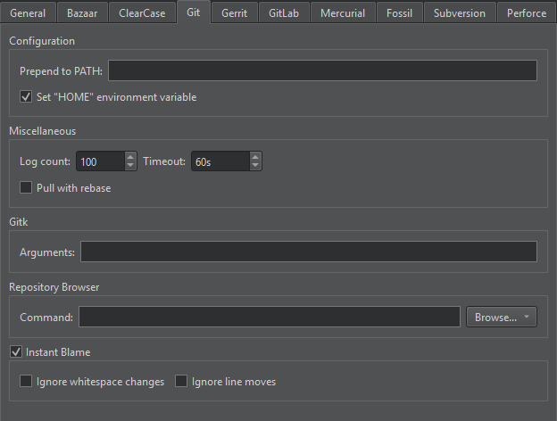

Use Git for Windows
If you configure Git for use with git bash only, and use SSH authorization, Git looks for the SSH keys in the directory where the HOME environment points to. The variable is always set by git bash.
However, the variable is typically not set in a Windows command prompt. When you run Git from a Windows command prompt, it looks for the SSH keys in its installation directory, and therefore, the authorization fails.
You can set the HOME environment variable from Qt Creator. Go to Preferences > Version Control > Git, and then select Set "HOME" environment variable. HOME is set to %HOMEDRIVE%%HOMEPATH% when the Git executable is run and authorization works as it would with git bash.

See also How To: Use Git, Compare files, Set up version control systems, and Version Control Systems.